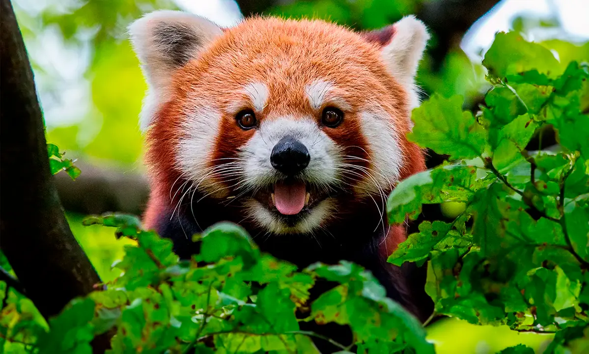
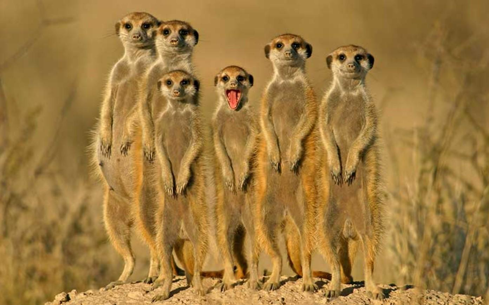
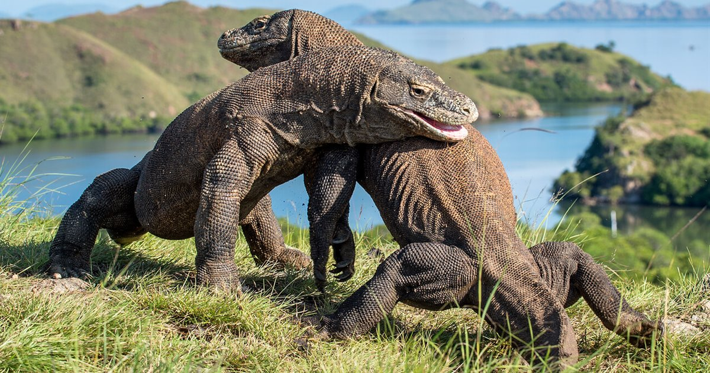
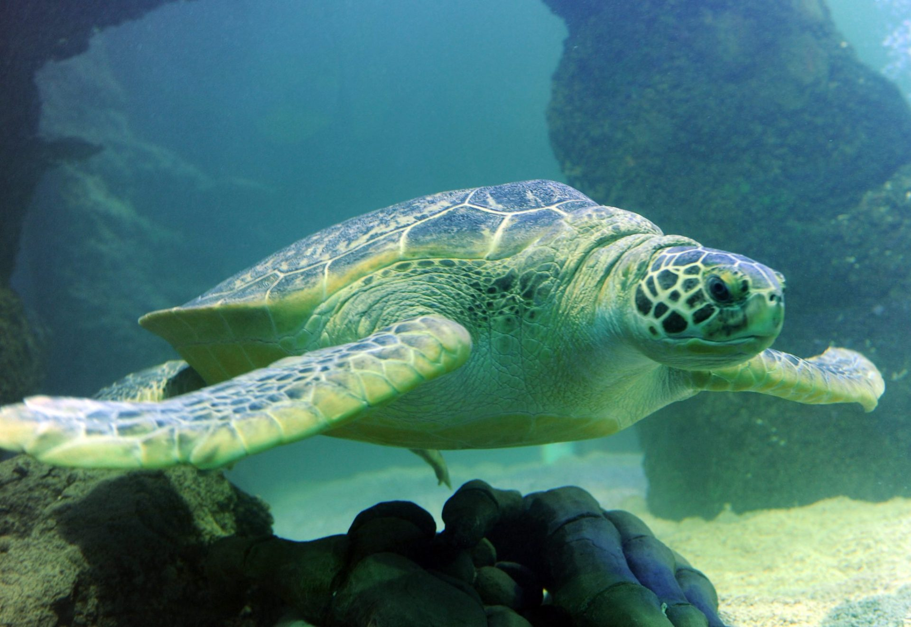
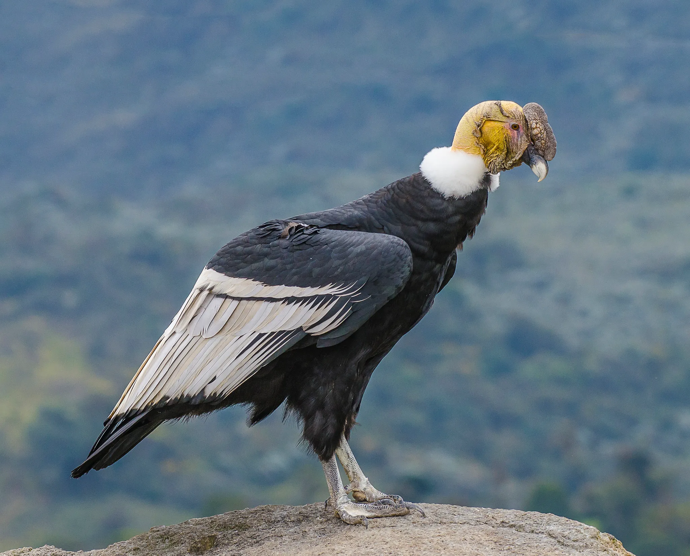

Aves
Guacamayo Azul
Ara ararauna - Sudamérica

Mamíferos
Tigre de Bengala
Panthera tigris tigris - Asia

Reptiles
Camaleón Pantera
Furcifer pardalis - Madagascar

Anfibios
Rana Dardo Venenosa
Dendrobatidae - Centroamérica

Mamíferos
Panda Rojo
Ailurus fulgens - Himalaya

Aves
Quetzal
Pharomachrus mocinno - Mesoamérica

Mamíferos
Suricata
Suricata suricatta - África

Reptiles
Dragón de Komodo
Varanus komodoensis - Indonesia

Aves
Tucán
Ramphastos toco - Sudamérica

Mamíferos
Leopardo de las Nieves
Panthera uncia - Asia Central

Reptiles
Tortuga Marina Verde
Chelonia mydas - Océanos Tropicales

Aves
Águila Harpía
Harpia harpyja - Amazonas

Mamíferos
Gorila de Montaña
Gorilla beringei - África Central

Mamíferos
Elefante Africano
Loxodonta africana - África

Reptiles
Cocodrilo del Orinoco
Crocodylus intermedius - Venezuela

Aves
Cóndor Andino
Vultur gryphus - Andes

Mamíferos
Oso Polar
Ursus maritimus - Ártico

Anfibios
Ajolote Mexicano
Ambystoma mexicanum - México